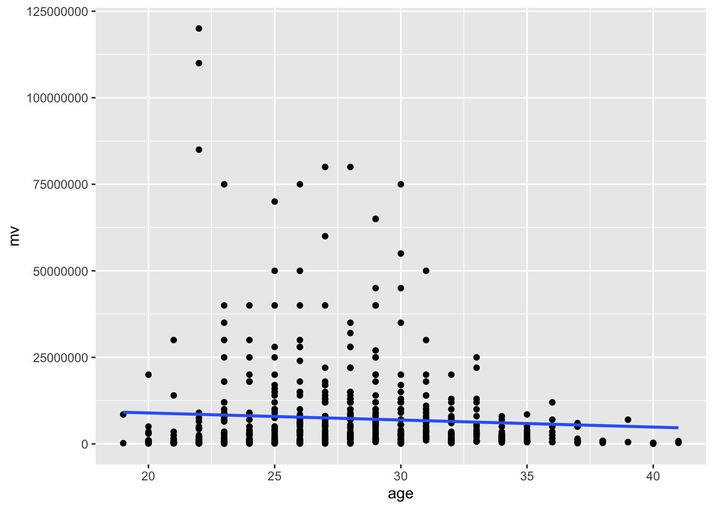

# Load libraries ----
library(tidyverse)
library(glue)
library(gt)
options(scipen=999) # Zahlenformat (kein wiss. Format)
### load data -----
date <- '2023-09-06' #oder: Sys.Date()
my_in_file<-glue('buli_raw_{date}.rds')
buli <- read_rds(file = xfun::from_root("data","raw",my_in_file))
### Data Wrangling ----
tbl_buli <- buli %>%
mutate(age=lubridate::year(Sys.Date())-
lubridate::year(player_dob)) %>%
rename(name=player_name,
mv=player_market_value_euro) %>%
select(name,age,mv)Stochastische Regression
Übung mit Daten zur Fußball-Bundesliga
Datenimport
Daten zur Fussball-Bundesliga der Saison 2022-23. Datenquelle: www.transfermarkt.de/, importiert am 09.06.2023 mit dem R-Paket worldfootballR.
Blick in die Daten
Anzahl Beobachtungen und Variablen sowie deskriptive Statistiken:
summary(tbl_buli) name age mv
Length:645 Min. :19.00 Min. : 50000
Class :character 1st Qu.:24.00 1st Qu.: 800000
Mode :character Median :27.00 Median : 2500000
Mean :27.71 Mean : 7346254
3rd Qu.:31.00 3rd Qu.: 7500000
Max. :41.00 Max. :120000000
NA's :11 Struktur:
head(tbl_buli) %>%
gt()| name | age | mv |
|---|---|---|
| Manuel Neuer | 39 | 7000000 |
| Yann Sommer | 37 | 5000000 |
| Sven Ulreich | 37 | 700000 |
| Johannes Schenk | 22 | 300000 |
| Matthijs de Ligt | 26 | 75000000 |
| Dayot Upamecano | 27 | 60000000 |
Streudiagramm der Grundgesamtheit:
#### ggplot ----
tbl_buli %>%
ggplot(aes(x=age,y=mv)) +
geom_point() +
geom_smooth(method = "lm", se = FALSE)`geom_smooth()` using formula = 'y ~ x'Warning: Removed 11 rows containing non-finite outside the scale range
(`stat_smooth()`).Warning: Removed 11 rows containing missing values or values outside the scale range
(`geom_point()`).